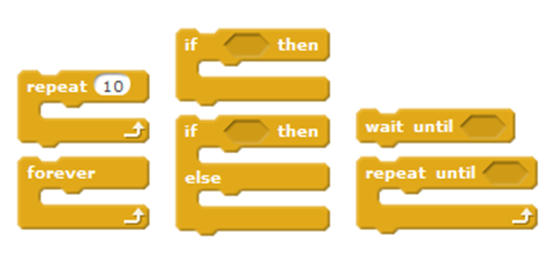
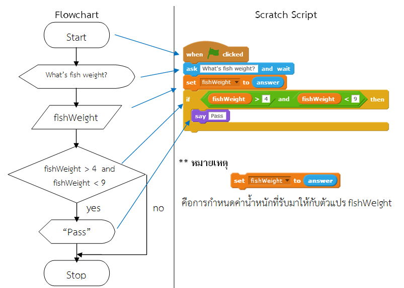

จาก FLOWCHART สู่ SCRATCH
สิ่งสำคัญของการแก้ปัญหาใดๆ คือการกระบวนการแก้ปัญหา ในวิชาด้านวิทยาคอมพิวเตอร์เรียกว่าขั้นตอนวิธี
ในการโปรแกรม ครูผู้สอนจำเป็นจะต้องฝึกให้นักเรียนแสดงแนวความคิดในการแก้ปัญหาของตนโดยใช้รหัสลำลอง
(Pseudocode) หรือ ผังงาน (Flowchart) ซึ่งเป็นเครื่องมือสากลที่ใช้ในการแสดงขั้นตอนการแก้ปัญหาทางคอมพิวเตอร์
ปัญหาที่ครูผู้สอนพบในการสอนเขียนผังงานหรือรหัสลำลองคือ นักเรียนไม่เข้าใจการทำงานของโครงสร้าง
แบบมีเงื่อนไขและการทำซ้ำ การเขียนผังงานตามความเข้าใจจึงอาจทำให้ได้ผลลัพธ์ไม่ตรงตามความต้องการ
หรือได้ผังงานที่ไม่ถูกต้อง วิธีการหนึ่งที่จะช่วยตรวจสอบความเข้าใจของนักเรียนในการเขียนผังงานคือการนำผังงาน
ไปเขียนโปรแกรม Scratch
Scratchเป็นโปรแกรมที่ถูกพัฒนาขึ้นโดยสถาบัน MIT (The Massachusetts Institute of Technology)
มีบล็อกคำสั่งที่นำมาวางต่อกัน ผู้ใช้ไม่ต้องพิมพ์คำสั่งใหม่ทั้งหมด จึงช่วยลดข้อผิดพลาดในการพิมพ์ นอกจากนี้ยังมีบล็อกที่ช่วยควบคุมการทำงานแบบมีเงื่อนไขและทำซ้ำ โดยผู้ใช้สามารถกำหนดเงื่อนไขเพิ่มเติมลงในโครงสร้างเหล่านี้ได้

รูปที่ 1 แสดงตัวอย่างคำสั่งในบล็อคควบคุม
ตัวอย่างการทำงานแบบมีเงื่อนไข เช่น พ่อค้าคนกลางจะต้องคัดเลือกปลาที่มีน้ำหนักตัวระหว่าง 5 ขีด ถึง 8 ขีด
เพื่อส่งร้านอาหาร ให้เขียนโปรแกรมรับน้ำหนักปลาแต่ละตัว ตัวใดมีน้ำหนักอยู่ในช่วงดังกล่าวให้แสดงคำว่า “Pass”
จากโจทย์แสดงว่าจะต้องมีการรับค่าน้ำหนักปลาแต่ละตัวเข้ามา โดยค่าที่รับจะรับเป็นจำนวนเต็มเท่านั้น
นำมาตรวจสอบว่าน้ำหนักปลาตรงอยู่ในช่วง 5-8 ขีดหรือไม่ จะเขียนผังงานได้ดังรูปที่ 2

รูปที่ 2 แสดงผังงานและ Scratch Script แสดงการทำงานแบบมีเงื่อนไข
จากรูปที่ 2 เมื่อเขียนผังงานแล้วสามารถแปลงเป็นสคริปต์ โดยรับค่าด้วยบล็อก ask ค่าที่ผู้ใช้ป้อนจะถูกเก็บไว้
ในบล็อก answer จึงใช้บล็อก set…to เพื่อนำค่าจากบล็อก answer เก็บไว้ในตัวแปร fishWeight แล้วนำค่าในตัวแปร
fishWeight ไปเปรียบเทียบโดยใช้บล็อก if…then เมื่อเงื่อนไขที่กำหนด ( fishWeight > 4 ) and ( fishWeight < 9 )
เป็นจริง จะแสดงข้อความ Pass ด้วยบล็อก say หากไม่จริง จะสิ้นสุดการทำงาน
จากตัวอย่างข้างต้น เมื่อผู้เรียนใช้ Scratch ในการตรวจสอบผลลัพธ์จะทำให้เกิดความเข้าใจลำดับ
และวิธีเขียนผังงานได้มากยิ่งขึ้น หากผลการทำงานของโปรแกรมไม่เป็นไปตามความต้องการ สามารถตรวจสอบย้อนกลับไปที่ผังงานที่เขียนขึ้นว่าเกิดข้อผิดพลาดในขั้นตอนใด
การนำ Scratch มาช่วยในการทำความเข้าใจเรื่องผังงาน เป็นวิธีการหนึ่งที่เหมาะกับผู้เรียนที่เริ่มต้นเรียนรู้
การเขียนผังงาน เนื่องจาก Scratch ใช้งานง่าย และสามารถเชื่อมโยงลำดับความคิดในผังงานแต่ละขั้น ไปยังสคริปต์
แต่ละคำสั่งได้อย่างเป็นรูปธรรม เมื่อผู้เรียนมีทักษะในการเขียนผังงานได้เป็นอย่างดีแล้ว ก็จะสามารถถ่ายทอดความคิดจากผังงานไปสู่การเขียนโปรแกรมได้อย่างถูกต้อง ไม่ว่าจะเขียนโปรแกรมด้วยภาษาใดก็ตาม
ยกร่างบทความโดย นางสาวชุลีพร สืบสิน โรงเรียนเฉลิมพระเกียรติสมเด็จพระศรีนครินทร์ ภูเก็ต จ.ภูเก็ต
บรรณาธิการโดย คณะบรรณาธิการสาขาคอมพิวเตอร์ สสวท.